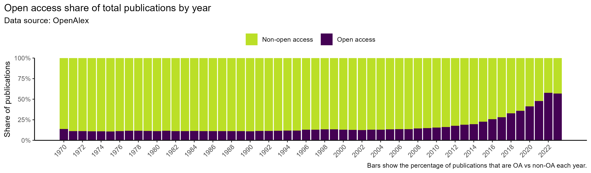

Reduce the Costs and Increase the Benefits of Open Science
Find out how shifting incentives can make open science the norm.
Dr David Buil-Gil ![]()
Prof Torbjørn Skardhamar
Embracing open science principles is often perceived as more costly than beneficial for individual researchers. To some extent that is true. This is simply an observation of the current structure of incentives within academic institutions and the research ecosystem worldwide; it is not a critique of open science.
Those engaging in open science practices like publishing pre-registrations or registered reports, anonymising and openly sharing data and analytic code, sharing open educational resources, engaging in citizen science, and dedicating time pro bono to open community-driven platforms, repositories and software, do it primarily because they know it’s the right thing to do. And it comes with a cost: each of these activities takes time, particularly for those engaging with them for the first time.
Preparing and documenting open data effectively can easily take days to weeks. Publishing open code similarly may require time for documentation, licensing, testing, and could stretch from several days to a few weeks. Contributing to open educational resources or notebooks, or engaging in citizen science, can vary enormously depending on scope, but often involve ongoing efforts, not a one-off activity. All this effort is essential to advance robust, replicable, and reproducible science, as we now know. But this is not really rewarded within academic circles, funders, and employers. This is particularly the case for criminology, which is clearly lagging behind many other disciplines in the uptake of open science principles. For individuals, the costs outweigh the benefits. And when costs outweigh benefits, people simply don’t do it. Some people will (and we should be forever indebted to them), but restructuring the incentive system becomes paramount for these much-needed practices to become mainstream. The benefits must outweigh the costs.
It is possible to change academic incentive structures, and the shift towards open access publishing is an example of that. Funders required open access publishing and worked on the structures to make this happen. The point here is that the structure of incentives has been reversed for individual researchers: today, the benefits of open access publishing largely exceed the costs, so people are publishing open access en masse.

The shift in incentives around open access shows that change is possible. And this matters because open science, at its heart, is about documenting findings and ensuring reproducibility and replicability, and for that reason it’s a core value of any science. Whatever you think is the scientific gold standard is, at best, bronze if the findings aren’t properly documented. Keeping documentation in a personal drawer is not good enough. Still, we have to expect people to respond to incentives, and the current structures don’t sufficiently promote open science.
Now, how can we reduce the costs and increase the benefits of other much-needed open science practices so these are equally embedded in mainstream research cycles? Not easy. But different approaches have potential to, first, reduce the costs:
1. Document everything carefully from the beginning of each project. A good starting point is simply to be systematic from day one. If you take the time to organise and annotate your datasets properly, they can often be shared with little additional work. For completely non-shareable data, providing a proper reference or metadata record comes at very little cost. (Of course, reality can sometimes be more complicated.) The same principle applies to pre-registrations: if you already have a well-thought-out research plan (especially for experiments and severe tests of theories), then registering it formally is not an onerous task. And if you write tidy, well-documented code in the first place, sharing it later requires hardly any extra effort.
2. Budget for open science. Much research is funded via government research councils and other international, national and local funding bodies. Some, though not all, are becoming increasingly aware of the need for transparency and openness in research practices, so budgeting for open science practices within projects would reduce the cost (primarily time dedicated) for individual researchers, who can instead appoint open science consultants or postdoctoral researchers to take responsibility for these tasks.
3. Collaborate with open science connoisseurs. Prioritise collaborators who are well familiar with the initiatives and their workings, so the time required for these tasks can be more widely distributed among team members.
4. Train students and early career researchers. Investment for today, great rewards for tomorrow. Academics are paid to train students and mentor early career researchers in good research practices, so we can use this time (no extra cost) to teach students about the need for and actual workings of open science principles and frameworks, with both medium- and long-term benefits for them, for educators (if they become future collaborators), and fairly obviously, for the whole community.
5. Create shared infrastructure. Develop discipline-specific templates for data documentation, preregistration, and analytic code sharing, so re-use becomes simpler both for you and everyone else.
6. Engage with institutional and cross-university support units. Collaborate with open science offices and networks, like the European Network for Open Criminology, which offer formal and informal support and drop-in advice on applying open science practices.
Simultaneously, we also need to increase the benefits:
1. Be the voice for open science in selection panels and promotion committees. Advocate for open science principles to become core components of selection processes for academic positions and internal promotions.
2. Be the voice in scientific societies. Push for open science principles to become criteria for awards delivered by academic societies at conferences and working group meetings.
3. Be the voice in grant panels. Advocate for open science principles to become part of selection criteria for grants and scholarships. Funders could even trial “open science multipliers” for proposals that demonstrate strong commitments.
4. Be the voice in editorial boards. Push for open science principles to become key considerations in peer review. Journals can use micro-credits and badges to visibilise and normalise open science practices, or make data/code availability statements mandatory in submissions.
5. Cite open science followers. Prioritise citing studies that follow open science principles over those that don’t.
6. Nominate colleagues for awards. Put forward those who engage in open science for awards and fellowships.
7. Showcase impact. Describe your use of open science practices in your CV and institutional dashboards.
And yes, the slightly evil side of us says that beyond reducing the costs and enhancing the benefits, we should also reduce the benefits and increase the costs of not doing open science:
Put less trust in studies that could have but chose not to engage in open science. Prioritize citing studies you trust the most.
Do not nominate for awards those who could have applied open science principles but didn’t.
Do not write cover letters or references for those who could have but didn’t.
Always request open science engagement when reviewing for journals or grants.
Mention the need for open science in PhD evaluations.
Mention the need for open science in book discussions, both published and in author-meets-critics sessions.
Create league tables of journals, departments, or universities based on open science compliance.
So, in the end, it all comes back to incentives. People do things when the benefits outweigh the costs, and people don’t when they don’t. If we want open science to move from being the “right thing to do” for a small group of dedicated champions to being the normal thing that everybody does, this balance needs to be shifted. Reduce the costs, increase the benefits, and yes; it should be costly to not do the right thing.
The contents of this website is available for re-use under a Creative Commons Attribution 4.0 International Licence.